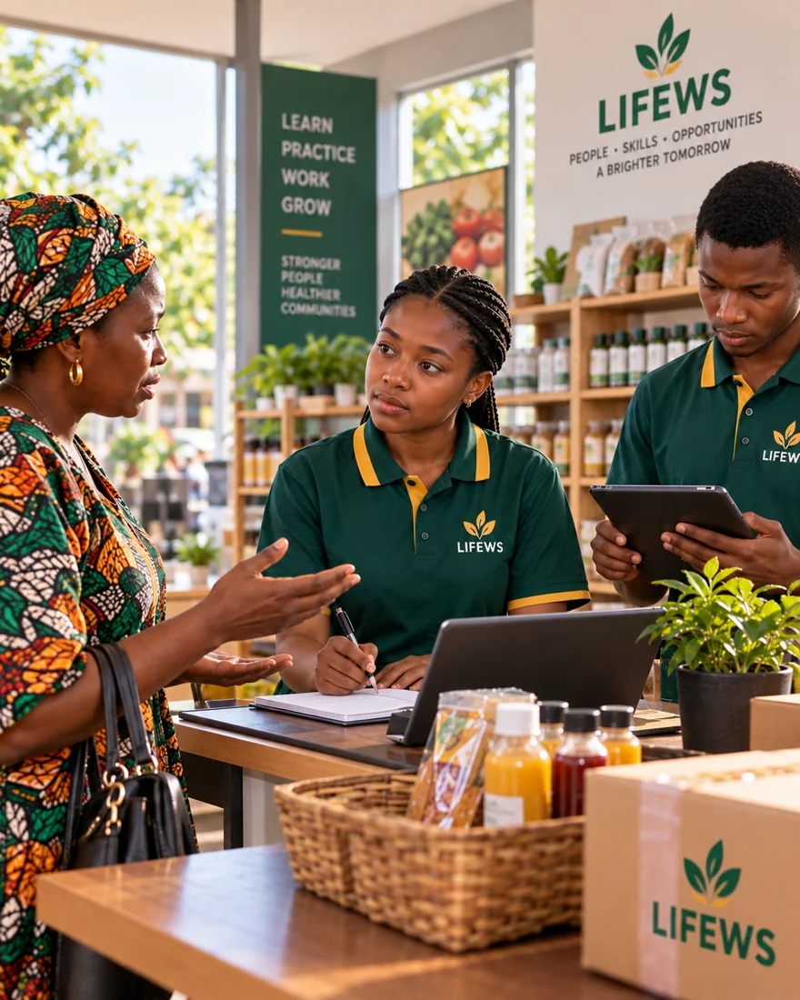

Batch traceability
Maintain product, producer, date, batch and distribution references.
Batch identification, inspection, traceability and controlled release support accountable beverage operations.
Batch identification, inspection, traceability and controlled release support accountable beverage operations.
Maintain product, producer, date, batch and distribution references.
Use documented inspection and release decisions rather than assuming every produced batch is saleable.
Escalate quality holds, complaints and corrective actions through accountable review.

Navigate across our beverage, production, distribution and community pages, or access the operational PartnerNet workspace.
Explore the ZARIKS network and connect with our team.